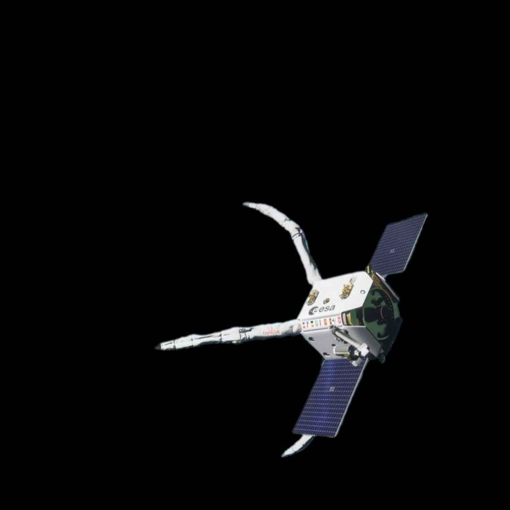

|
RISE : pourquoi la future
dépanneuse orbitale de l’ESA est absolument vitale |
 |
|
L'ESA collabore avec l’entreprise italienne D-Orbit pour développer une "dépanneuse spatiale" capable
de prolonger la durée de vie des satellites en les réparant, ravitaillant ou relocalisant en orbite.
Ce projet s’inscrit dans une stratégie d’« économie circulaire de l’espace », avec pour objectif de réduire la
pollution orbitale et de rendre l’utilisation des satellites plus durable.
|